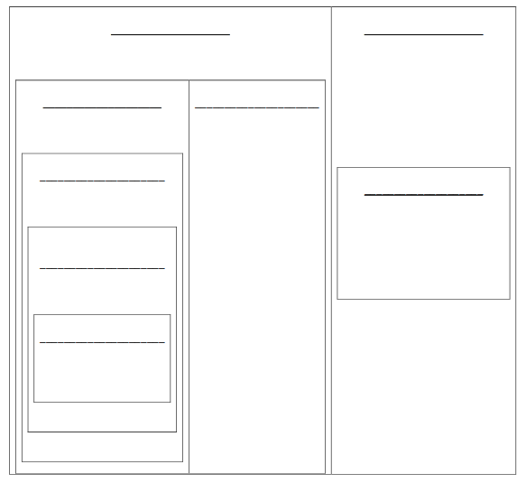
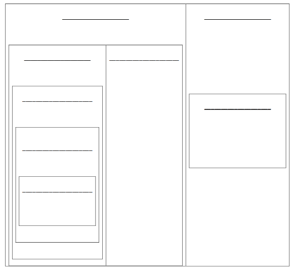

Smallest subgroup the number belongs to:
Natural:
Whole:
Integer:
Rational:
Irrational: ,
Pure Imaginary: , ,
Nonreal Complex:
Not a Complex Number:
Identify the subgroup of Complex numbers a number belongs to.
Now, watch this video to review the different sets of Complex numbers. First, try to define the following subgroups of the Complex Numbers. You should include examples for each (you may even want to take a sneak peak at the problems at the bottom of the page and use some of these as examples!) and descriptions of how to tell what the smallest set the number belongs to.
The Real Numbers are just a part of the Complex Numbers, so we still have the subgroups from Objective 1. Now we will look at how all of these subgroups are related.

Smallest subgroup the number belongs to:
Natural:
Whole:
Integer:
Rational:
Irrational: ,
Pure Imaginary: , ,
Nonreal Complex:
Not a Complex Number:
Like Objective 1, remember to reduce first, then decide the smallest subgroup the number belongs to!
Note: This part of the homework will change each time you clikc “Another”. You can keep clicking “Another” to practice seeing these more difficult numbers to classify.
To work around current Xronos issues, input the corresponding number for the correct
set.
Rational - 0
Irrational - 1
Nonreal Complex - 2
Pure Imaginary - 3
Not a Complex Number - 4